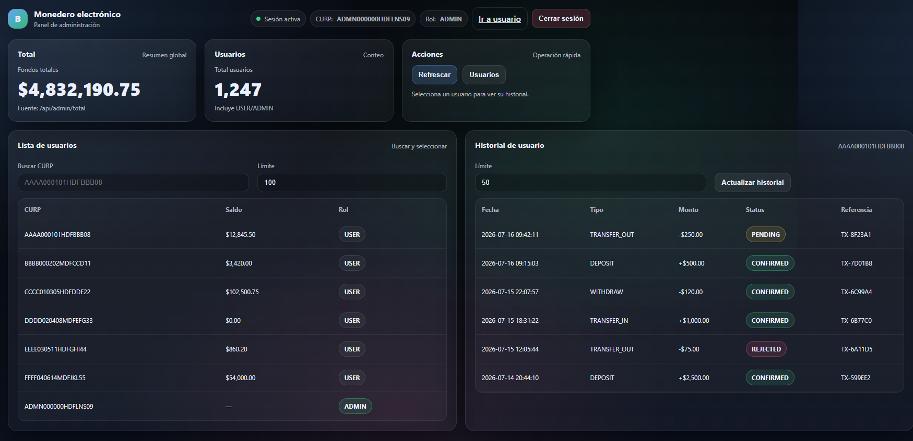

Sistemas distribuidos
Sistema Financiero de Dinero Electrónico
Plataforma de dinero electrónico (tipo banco) con arquitectura de microservicios en Java 17 desplegada en Google Cloud Platform. Autenticación con JWT, transferencias atómicas event-driven vía Pub/Sub y persistencia en Firestore.
- Java 17
- Microservicios
- GCP
- Pub/Sub
- Firestore